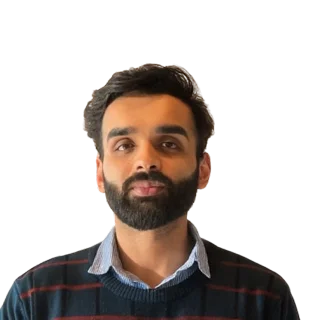
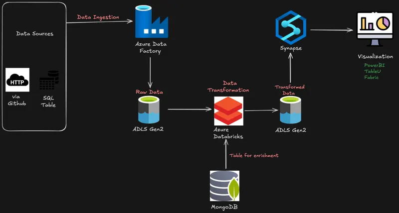
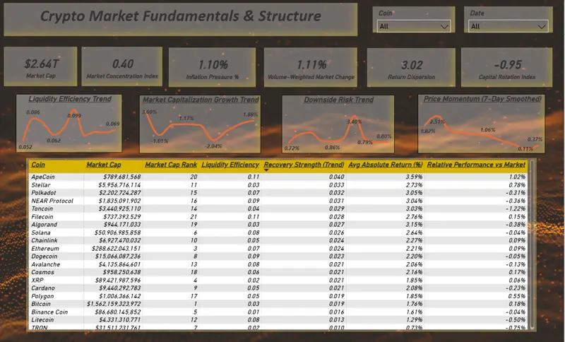
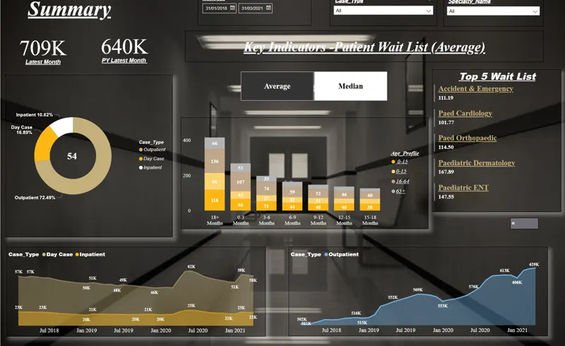
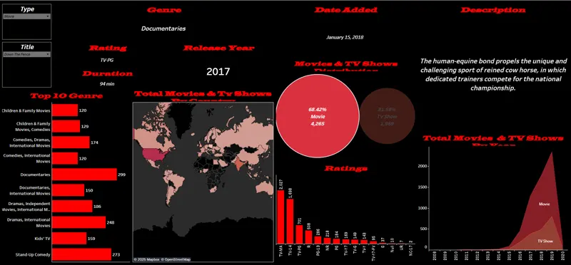
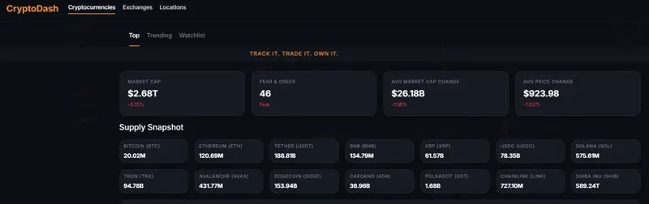

York University
Bachelor of Information Technology
Data Structures & Algorithms, Databases, Software Design, Statistics for ML, Data Mining, Artificial Intelligence, Operating Systems, Computer Networks.
Open to full-time roles · Toronto · Aug 2026
Data Engineer & BI Developer
I build data models, ETL pipelines and Power BI dashboards with SQL, Python, Databricks and Snowflake.

Data Engineer and BI Developer with 2 years of experience building data models, pipelines and Power BI dashboards with SQL, Python, Databricks and Snowflake across CPG, wealth management and the public sector.
I'm finishing a Bachelor of Information Technology at York University (August 2026) and looking for full-time Data Engineer, BI Developer and Data Analyst roles in Toronto.
Bachelor of Information Technology
Data Structures & Algorithms, Databases, Software Design, Statistics for ML, Data Mining, Artificial Intelligence, Operating Systems, Computer Networks.
Diploma, Business Management and Information Systems
Management Information Systems, Database Management, Systems Analysis & Design, Business Analytics, Web Development, Data Visualization, IT Project Management.
FGF Brands · Toronto, ON
VJDS International Inc. · Remote
Ontario Public Service, Ministry of Public and Business Service Delivery · Toronto, ON
National Circle for Indigenous Agriculture and Food (Riipen) · Remote
Richardson Wealth Ltd. · Toronto, ON
Data pipelines, data models and dashboards. Open a card for the problem, what I built and the result.

End-to-end Medallion pipeline on Azure that turns raw e-commerce data into analytics-ready tables.

Scheduled Python ETL into PostgreSQL feeding a multi-page Power BI dashboard on crypto market risk.

Power BI dashboard that shows where patient wait times build up across departments.

Interactive Tableau analysis of Netflix's global catalogue by region, genre and release year.
Compared five time series and ML models to find the most accurate retail sales forecast.

Full-stack Spring Boot app that brings live prices, news, exchanges and watchlists into one place.
TODO: one or two lines on the business question and the outcome.
TODO: one or two lines on the problem and what the app does.
Open to collaborations, internships, and full-time opportunities.